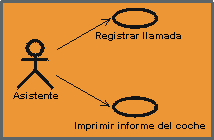
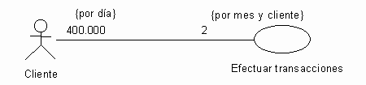
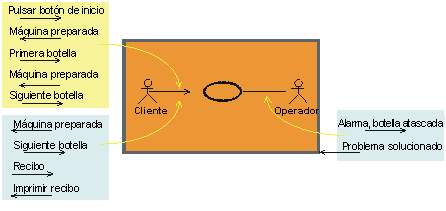

| Directriz: Asociación-comunicar |
 |
|
| Elementos relacionados |
|---|
ExplicaciónLos guiones de uso y los actores interactúan enviando señales entre si. Para indicar estas interacciones, utilizamos una asociación-comunicar entre guión de uso y actor. Un guión de uso tiene, como máximo, una asociación-comunicar con un actor específico, y un actor tiene, como máximo, una asociación-comunicar con un guión de uso específico, sin importar cuantas transmisiones de señal existen. La red completa de estas asociaciones es una imagen estática de la comunicación entre el sistema y su entorno. Las asociaciones-comunicar no son nombres. Como sólo puede existir una asociación-comunicar entre un guión de uso y un actor, sólo debe especificar los puntos de inicio y final para identificar una asociación-comunicar concreta.  Una línea o flecha entre un actor y un guión de uso indica que interactúan enviando señales entre si. RolesCada extremo de una asociación-comunicar es un rol que especifica la cara que juega un guión de uso o un actor en la asociación. Los roles se utilizan para especificar multiplicidades y direcciones de la asociación (vea a continuación). MultiplicidadCada rol de una asociación-comunicar indica la multiplicidad de su tipo, es decir, cuántas instancias de ese actor o guión de uso se puede asociar con una instancia del otro guión de uso o actor. La multiplicidad se indica con una expresión de texto en el rol. La expresión es una lista de rangos enteros separados por comas. Un rango se indica con un entero (el valor más bajo), dos puntos y un entero (el valor más alto); un único entero es un rango válido, y el símbolo '*' indica "muchos", es decir, un número de objetos ilimitado. El símbolo '*' por si mismo equivale a '0..*', es decir, cualquier número que incluya ninguno; el valor por omisión. Un rol escalar opcional tiene la multiplicidad 0..1. La multiplicidad se puede aumentar con una restricción de unidad de tiempo. Esto se efectúa para indicar cuántas instancias se pueden asociar, posiblemente por diferentes instancias, durante la unidad de tiempo. Esta información resulta útil porque indica si el guión de uso se realiza a menudo, y con qué frecuencia cada instancia de actor emplea el guión de uso. Ejemplo: Los clientes utilizan el guión de uso Efectuar transacciones 400.000 vueltas diarias. Cada cliente emplea el guión de uso dos veces al mes. NavegabilidadCada rol de una asociación-comunicar tiene una propiedad navegabilidad, que indica quien inicia la comunicación en la interacción. La navegabilidad se muestra con una punta de flecha abierta. Si la punta de flecha apunta a un guión de uso, el actor del otro extremo de la asociación inicia la interacción con el sistema. Si la punta de flecha apunta a un actor, el sistema inicia la interacción con el actor. La navegabilidad en dos direcciones se muestra con una línea sin puntas de flecha (dos puntas de flecha tienden a desordenar los diagramas).  La flecha de comunicación define el actor que ha iniciado el guión de uso. Para cada flecha de comunicación, se asume el mensaje de retorno. Una línea sin cabezas de flecha asume la comunicación en las dos direcciones. No confunda la navegabilidad con el flujo de datos; se utiliza para mostrar únicamente la iniciación de la comunicación. Por ejemplo, la solicitud de datos de un cliente se muestra con una flecha para el guión de uso que representa el sistema, aunque la mayoría de datos fluyan desde el sistema hacia el cliente.
Comunicación del actor al
guión de uso
|
© Copyright IBM Corp. 1987, 2006. Reservados todos los derechos. |